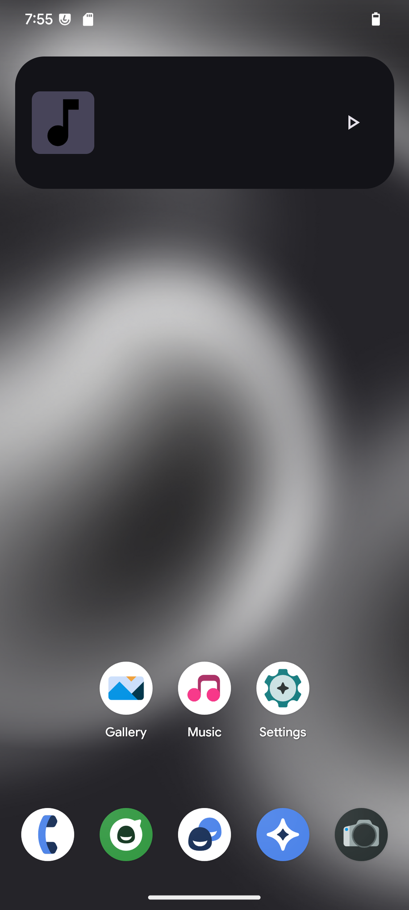
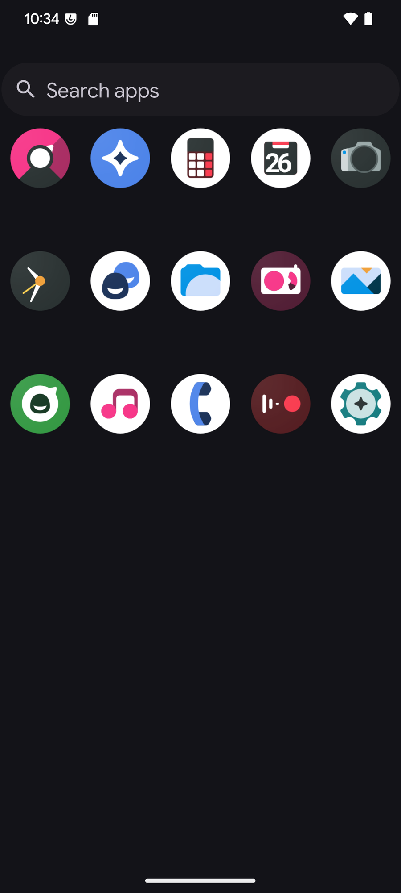
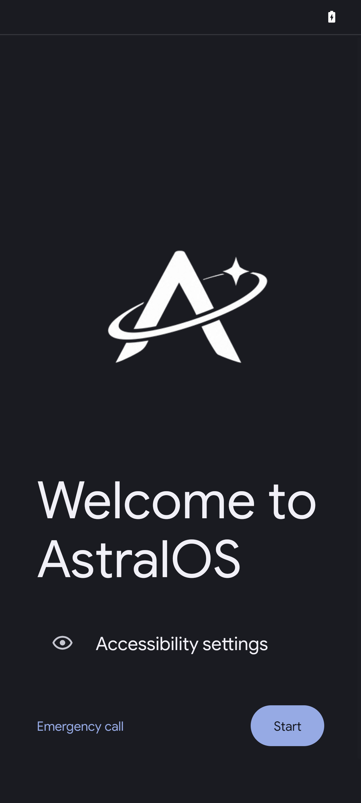
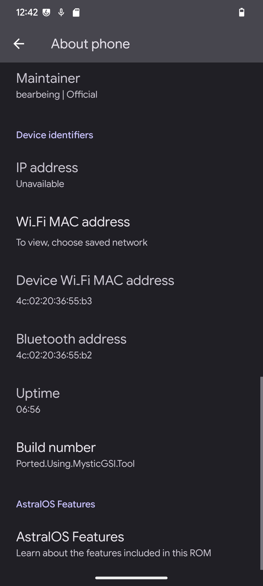

Android 15 · LineageOS base
A free, open-source ROM based on LineageOS, with no Google apps included and a few extra controls in Settings.

AstralOS in motion
A short film made with the AstralOS interface and project identity.
Screenshots



Features
ZRAM, input boost, and compiler tuning help keep everyday actions responsive.
The ROM ships without Google apps. Install a GApps package separately if you need one.
Google Sans Flex is used across the system interface.
The source is public on GitHub. The repositories below are a good place to start.
Settings includes options for the lockscreen clock, animation speed, flashlight gestures, and screenshots.
AstralOS 1.0 is based on LineageOS 22.2 and Android 15.
Source code
These repositories cover the framework, Settings, miatoll support, and the build manifest.
AstralOS changes to the Android framework.
frameworks_baseAstralOS changes to Android Settings.
packages_apps_SettingsDevice files for the Redmi Note 9 Pro family.
device_xiaomi_miatollThe repo manifest used to sync AstralOS source.
manifestFAQ
Choose your device on Downloads and follow its installation guide. The guide lists the required files and steps for that model.
No. Flash a GApps package after installing AstralOS if you want Google apps.
OTA updates are built in. Availability depends on whether a build has been published for your device.
Contributors
Founder, Developer & Designer
Designer
Downloads
Choose your device to check build status and read its installation guide.
Browse devices